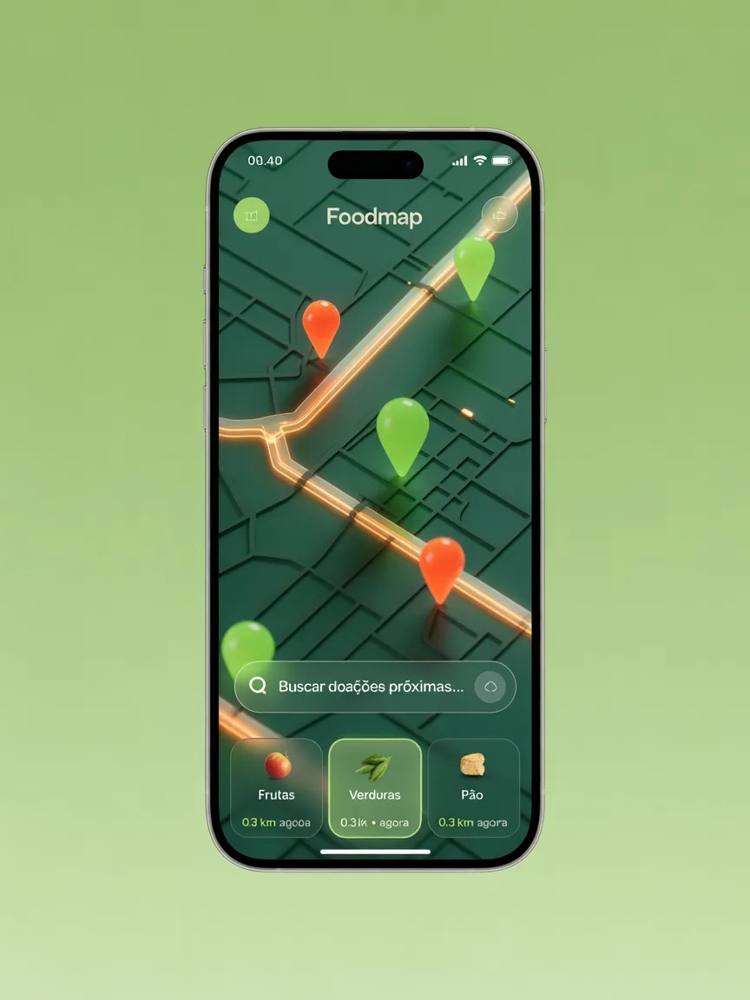

Conectando quem tem
com quem
precisa.
O FoodMap é uma plataforma colaborativa que combate o desperdício de alimentos e a insegurança alimentar em tempo real, conectando doadores a quem mais precisa.

Mapa interativo em tempo real
O Contexto Brasileiro
Um paradoxo inadmissível: Fome em meio à
abundância
Nossa missão é eliminar a barreira de informação que separa quem tem alimento disponível de quem precisa receber. Por meio de geolocalização e matching automático, tornamos o processo de doação simples e acessível para qualquer pessoa, independentemente do nível de familiaridade com tecnologia.
33M Pessoas
em insegurança alimentar grave
40% de Perda
na cadeia de abastecimento nacional
0 Plataformas Nacionais
de matching doador-receptor em tempo real no Brasil
Como o FoodMap Funciona
Tecnologia para Impacto Social: Nossas Soluções Inovadoras
#01
Mapa interativo
Doadores e receptores visualizam em tempo real um mapa com pins de pontos de doação disponíveis próximos. Regiões com maior vulnerabilidade alimentar são destacadas por cor e severidade.
#02
Matching por Proximidade
O sistema calcula automaticamente os doadores mais próximos de cada receptor, considerando tipo de alimento, quantidade disponível, janela de horário e localização. O melhor par é sugerido automaticamente.
#03
Status de Doação
Cada doação percorre um ciclo rastreável: Disponível → Em Rota → Entregue. O receptor recebe confirmação do recebimento e o doador tem visibilidade completa do destino do alimento.
Impacto Real na Ponta da Cadeia
A tecnologia apenas facilita; são as pessoas e organizações parceiras que transformam a realidade diária.
Dona Maria da Silva
Mãe solo, 3 filhos — Receptora
"Antes do FoodMap, eu não sabia onde nem quando aparecia alguma doação perto de casa. Agora acesso o mapa pelo celular e vejo os pontos disponíveis pertinho. Recebi um alerta ontem e busquei alimentos frescos para os meus três filhos. Nunca pensei que um aplicativo pudesse fazer tanta diferença assim."
Carlos Eduardo
Dono de Restaurante — Doador
"Todo dia sobrava comida boa no final do expediente e eu não sabia o que fazer. Encontrar quem precisava era complicado demais. Com o FoodMap, cadastro o que sobrou, informo o horário e o sistema avisa quem está perto. Simples assim. Parei de desperdiçar e ainda ajudo quem precisa."